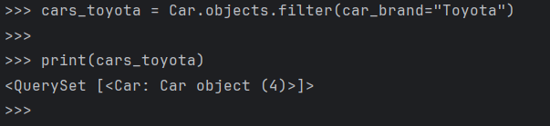
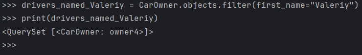
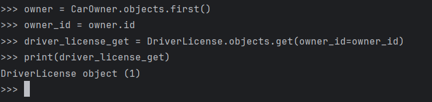
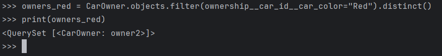
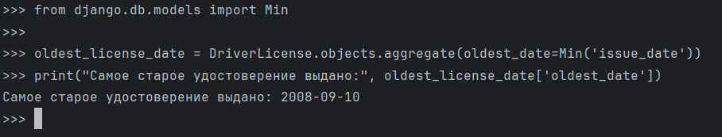
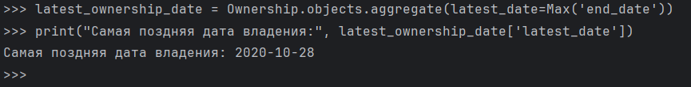
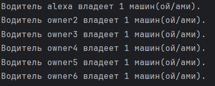
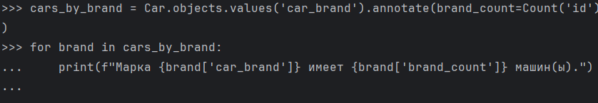
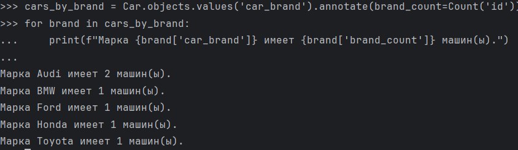
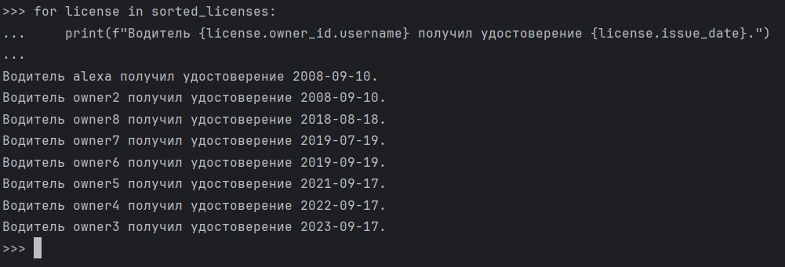

Django WEB Framework. Запросы и их выполнение.
Задача 1. Создание объектов
Напишите запрос на создание 6-7 новых автовладельцев и 5-6 автомобилей, каждому автовладельцу назначьте удостоверение и от 1 до 3 автомобилей. Задание можете выполнить либо в интерактивном режиме интерпретатора, либо в отдельном python-файле. Результатом должны стать запросы и отображение созданных объектов. Если вы добавляете автомобили владельцу через метод .add(), не забудьте заполнить также ассоциативную сущность “владение”
Ход работы
Запускаем интерактивный режим:
python manage.py shell
Создаем автовладельцев и автомобили:
>>> owner6 = CarOwner.objects.create(username="owner8", birth_date="1998-12-26", passport_number="4018", home_address = "Address6", nationality="russian", password="password128")
>>> car6 = Car.objects.create(gov_number="DEF789", car_brand="BMW", car_model="X5", car_color="Black")
Каждому автовладельцу назначаем удостоверение и от 1 до 3 автомобилей:
owner3 = CarOwner.objects.get(id=3)
>>> DriverLicense.objects.create(owner_id=owner3, license_number="DL67890", license_type="C", issue_date="2008-09-10")
<DriverLicense: DriverLicense object (2)>
>>> Ownership.objects.create(owner_id=owner6, car_id=car6, start_date="2021-03-02")
<Ownership: Ownership object (6)>
Задача 2. Создание простых запросов
По созданным в ПР1 данным написать следующие запросы на фильтрацию (где это необходимо, добавьте related_name к полям модели):
- Вывести все машины марки “Toyota” (или любой другой марки, которая у вас есть)
- Найти всех водителей с именем “Олег” (или любым другим именем на ваше усмотрение)
- Взяв любого случайного владельца, получить его id, и по этому id получить экземпляр удостоверения в виде объекта модели (можно в 2 запроса)
- Вывести всех владельцев красных машин (или любого другого цвета, который у вас присутствует)
- Найти всех владельцев, чей год владения машиной начинается с 2010 (или любой другой год, который присутствует у вас в базе)
Ход работы
Добавляем related_name модели Владение:
class Ownership(models.Model):
owner_id = models.ForeignKey(CarOwner, on_delete=models.CASCADE, null=True, related_name="car_ownerships")
car_id = models.ForeignKey(Car, on_delete=models.CASCADE, null=True, related_name="ownership_cars")
start_date = models.DateField(null=False)
end_date = models.DateField(null=True)
Выводим все машины марки Toyota:

Выводим всех водителей с именем Валерий:

Взяв любого случайного владельца, получаем его id, и по этому id получаем экземпляр удостоверения в виде объекта модели:

Выводим всех владельцев красных машин:

Находим всех владельцев, чей год владения машиной начинается с 2018:
owners_2018 = CarOwner.objects.filter(ownership__start_date__year=2018).distinct()
>>> print(owners_2018)
<QuerySet [<CarOwner: owner4>]>
>>>
Задача 3. Агрегация и аннотация запросов
Необходимо реализовать следующие запросы c применением описанных методов:
- Вывод даты выдачи самого старшего водительского удостоверения
- Укажите самую позднюю дату владения машиной
- Выведите количество машин для каждого водителя
- Подсчитайте количество машин каждой марки
- Отсортируйте всех автовладельцев по дате выдачи удостоверения
Ход работы
Самое старое удостоверение:

Самая поздняя дата владения машиной:

Количество машин для каждого владельца:
from django.db.models import Count
owners_car_count = CarOwner.objects.annotate(car_count=Count('cars')).values('username', 'car_count')
for owner in owners_car_count:
print(f"Водитель {owner['username']} владеет {owner['car_count']} машин(ой/ами).")

Количество машин каждой марки:


Сортировка всех автовладельцев по дате выдачи удостоверения:
from django.db.models import F
sorted_licenses = DriverLicense.objects.select_related('owner_id').order_by('issue_date')
for license in sorted_licenses:
print(f"Водитель {license.owner_id.username} получил удостоверение {license.issue_date}.")
